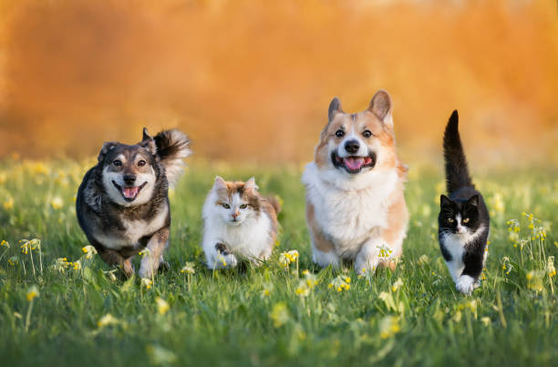
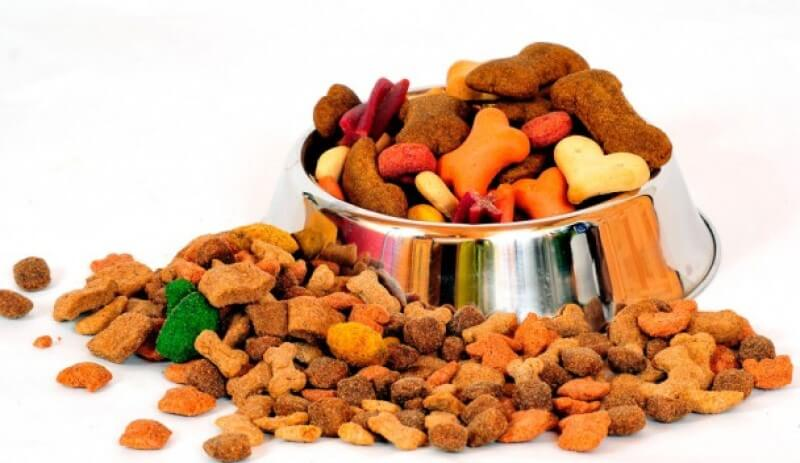
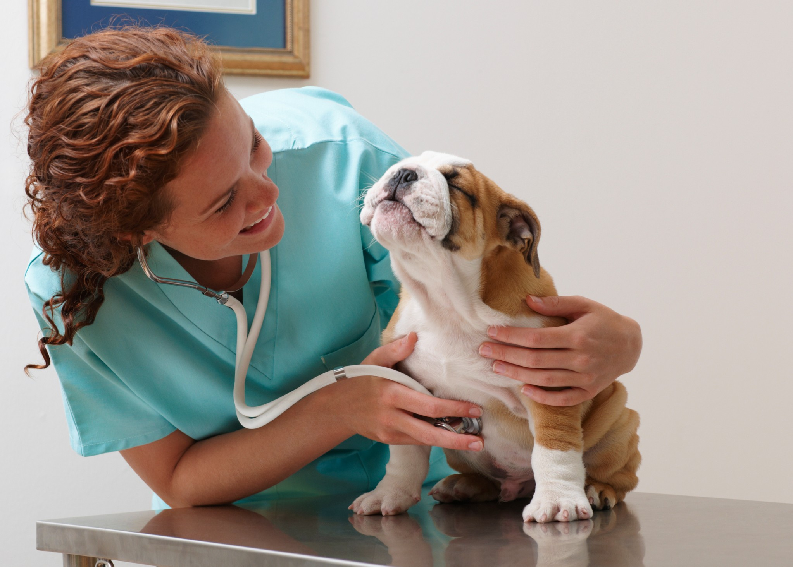
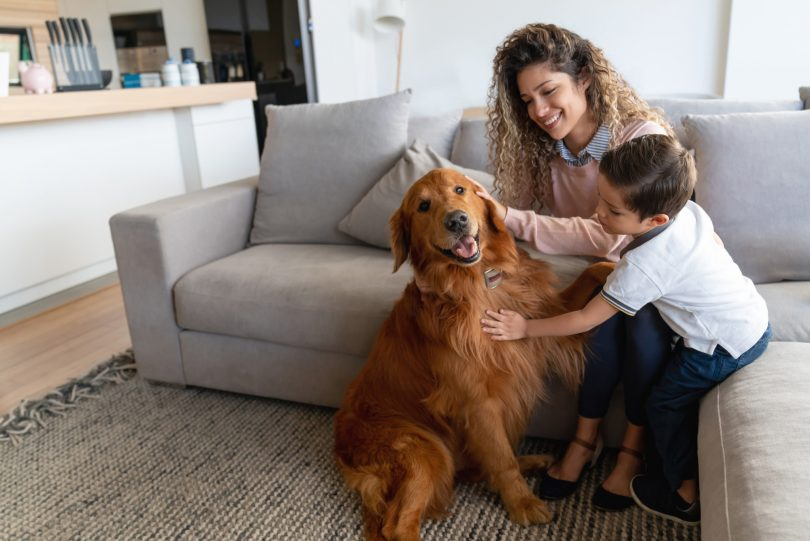
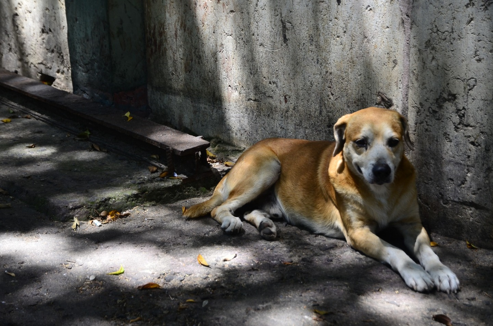
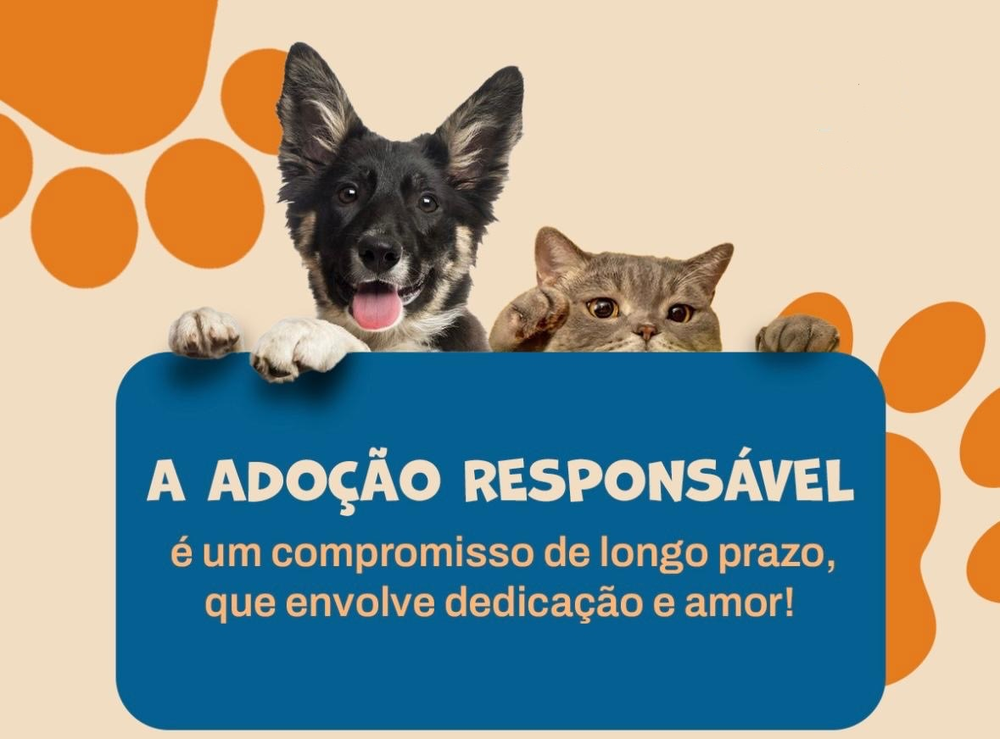

Nenhum pet com fome, Nenhum pet sem cuidado
A Pata Amiga é uma ONG de proteção animal que alimenta, cuida e encontra novos lares para cães e gatos abandonados nas ruas.

O que fazemos
O trabalho da Pata Amiga tem três frentes, que se completam: garantir comida, cuidar da saúde e encontrar uma família para cada animal resgatado.

Alimentamos
Mantemos pontos de alimentação nos bairros, com ração e água limpa todos os dias. Voluntários passam por eles para reabastecer os potes e conferir se os animais estão bem.

Cuidamos
Levamos os animais resgatados ao veterinário, para vacinação, tratamento e castração. Só depois de cuidados eles ficam prontos para ir para um novo lar.

Encontramos lares
Conectamos cada pet recuperado a uma família responsável e preparada. Enquanto isso, ele pode ficar em um lar temporário, com carinho e rotina.
Por que essa causa importa
Muitos cães e gatos vivem nas ruas porque foram abandonados ou nasceram sem tutor. Sem comida, água e atendimento veterinário, eles ficam expostos a doenças, a acidentes e ao frio.
Quando um animal não é castrado, ele pode ter filhotes que também acabam nas ruas, e o problema cresce a cada ano. Por isso a Pata Amiga trabalha ao mesmo tempo com alimentação, saúde e adoção.
Cada pote cheio, cada vacina aplicada e cada adoção responsável diminuem o sofrimento de um animal e ajudam a reduzir o abandono no bairro.


Como funciona a adoção responsável
Adotar é um compromisso que dura muitos anos. Para que a adaptação dê certo, seguimos algumas etapas:
- Você conhece os animais disponíveis e conversa com a equipe.
- Contamos como é a rotina e quais cuidados o animal precisa.
- O animal passa um período de adaptação, para ver se combina com a sua família.
- A equipe acompanha o pós-adoção e tira dúvidas.
Se você ainda não pode adotar, pode ajudar sendo lar temporário.
Cuidados básicos com cães e gatos
Algumas dicas simples para quem já tem um animal em casa. Para cada caso, o ideal é sempre conversar com um veterinário.
Alimentação e água
Ofereça ração adequada à idade e ao porte do animal e deixe água limpa e fresca sempre à disposição, trocando-a todos os dias.
Vacinação
As vacinas protegem contra doenças graves e precisam ser repetidas nas datas indicadas pelo veterinário. Filhotes devem começar o quanto antes.
Castração
A castração evita ninhadas indesejadas e contribui para a saúde do animal. É uma das ações mais importantes contra o abandono.
Você pode fazer parte
Toda ajuda conta: doando ração, sendo voluntário nos pontos de alimentação, oferecendo um lar temporário ou divulgando nossos projetos nas redes sociais.
Fale com a gente